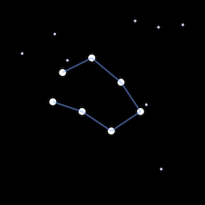

You just took your first step into MWL — an experimental visual language designed to be read across the galaxy. Here is your first glyph.
Every MWL glyph sits inside a square frame — like a window into meaning. This one means constellation: a pattern of stars seen from a particular place in the galaxy.

There are more than hundred glyphs like this — for stars, planets, ocean worlds, galaxies, people, and ideas. Each one is a single visual concept of the night sky or deep space, drawn to be understood without words.
These tools let you write in MWL right now — no installation, nothing to download.